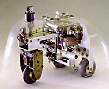
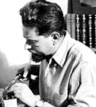

William Grey Walter(1910-1977) konstruierte Geräte zur Gehirntopographie u. studierte das Entstehen komplexen Verhaltens ausgelöst durch einfache Reflexhandlungen. Er baute die Roboter-Schildkröten "Elsie" und "Elmer", und begründete die Ära der mobilen Roboter. "Elsie" z.B. war in der Lage, eine Lichtquelle zu lokalisieren und in ihre Richtung zu fahren. Sie wurde elektronisch gesteuert und mit Batterien betrieben. "Elsie" konnte diese selbständig an bestimmten Ladestationen wieder aufladen. Walter verwendete den Begriff "Machina Specularis", - "Beobachtende Maschine".